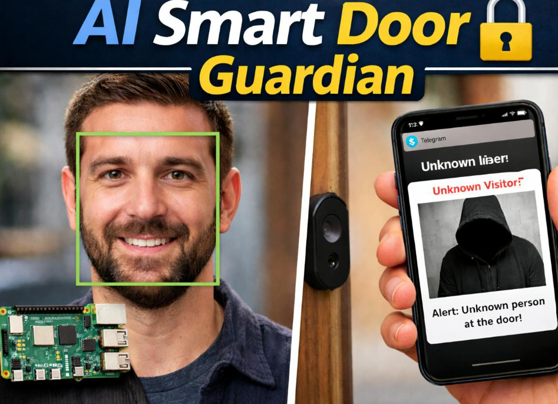
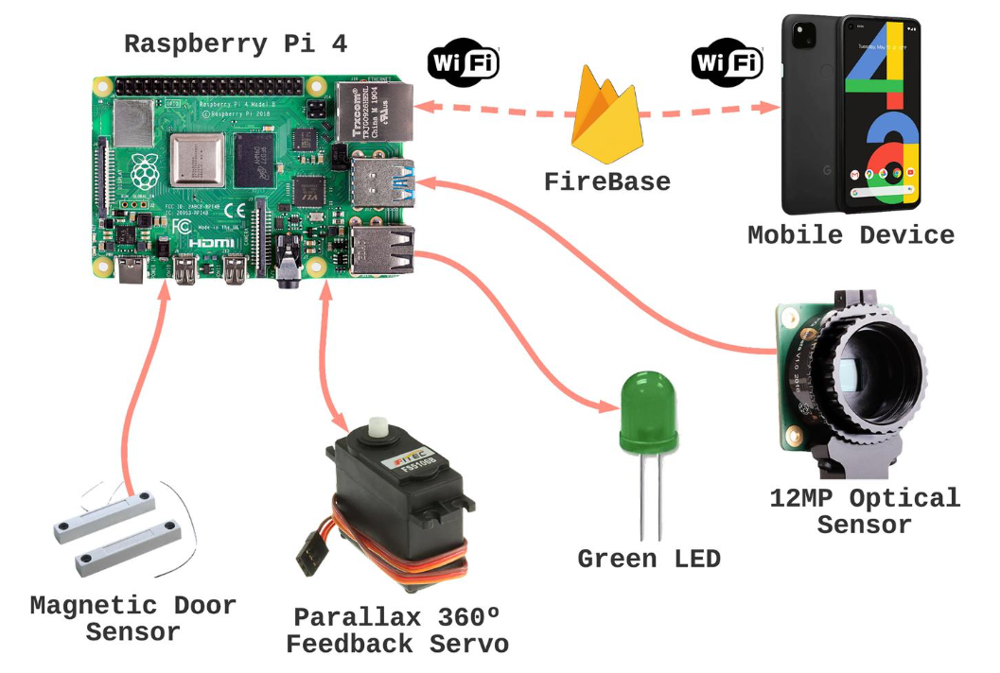
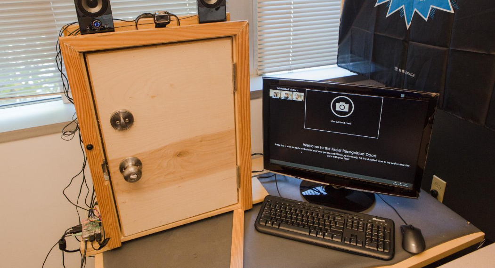
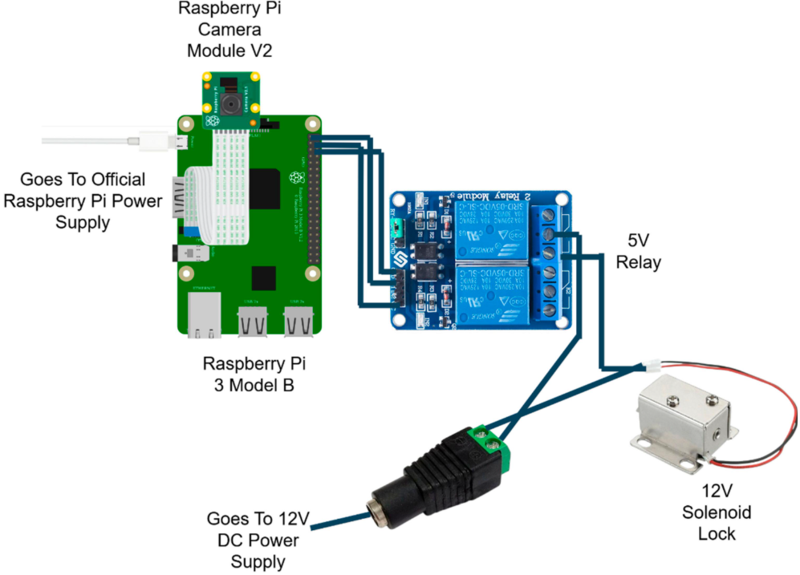

AI Face Detection
Detect human faces from live camera frames using OpenCV.
VJAYA ROBOTICS PROJECT
RASPBERRY PI AI PROJECTBuild an intelligent door access system using Raspberry Pi 5, Camera Module 3 and OpenCV. Recognize registered faces, grant access to authorized users and operate a 5V solenoid demonstration lock with a physical manual override.
Explore ProjectPROJECT OVERVIEW
The AI Face Recognition Door Access System uses a Raspberry Pi 5 as its main controller. A Raspberry Pi Camera Module 3 captures images of people standing in front of the door.
OpenCV processes the camera frames and detects human faces. The face recognition module compares the detected face with previously registered users stored in the system.
When an authorized user is recognized, the Raspberry Pi activates a relay driver to operate the 5V solenoid demonstration lock. Unknown faces are denied access.
The system also includes a physical manual override button, buzzer alerts and an SQLite database for recording access events.




WHAT IT CAN DO
Detect human faces from live camera frames using OpenCV.
Compare detected faces with registered user images using an LBPH recognition model.
Allow registered users to activate the demonstration door lock.
Deny access when a detected face does not match an authorized user.
Automatically return the demonstration lock to its locked state after the configured unlock duration.
Provide a physical push button for manual unlocking.
Generate buzzer alerts for successful and unsuccessful access attempts.
Store access events, user details, timestamps and access methods in SQLite.
HARDWARE REQUIREMENTS
SOFTWARE REQUIREMENTS
The Python application is organized into separate modules for camera management, face detection, face recognition, hardware control, security and access logging.
HOW IT WORKS
HARDWARE CONNECTIONS
| Component | Component Pin | Raspberry Pi Connection |
|---|---|---|
| Relay Driver | IN / Control | GPIO17 (BCM) |
| Manual Override Button | One Terminal | GPIO27 (BCM) |
| Manual Override Button | Other Terminal | GND |
| Buzzer | Signal | GPIO22 (BCM) |
| Camera Module 3 | Camera Connector | Raspberry Pi Camera Interface |
| Solenoid Lock | Power Connections | Separate suitable lock supply through driver |
| Relay Driver | VCC / GND | Compatible supply / GND |
ACCESS CONTROL
| Condition | System Action |
|---|---|
| Authorized Face | Grant access and activate lock driver |
| Unknown Face | Deny access and activate warning buzzer |
| Manual Override | Activate manual unlocking process |
| Unlock Timer Completed | Return demonstration lock to locked state |
| Camera Error | Do not grant face-based access |
| System Shutdown | Set lock output to its configured locked state |
Face recognition is used as an educational identification demonstration. LBPH is not liveness detection and can be fooled by photographs or video. Do not rely on this prototype as the sole security mechanism for a real entrance.
PROGRAM STRUCTURE
Main application and coordination of all project modules.
GPIO assignments, camera settings and security configuration.
Camera initialization, frame capture and camera shutdown.
Detects human faces from camera frames using OpenCV.
Trains and operates the LBPH face recognition model.
Registers users and manages their face image collections.
Controls the demonstration lock through the relay driver.
Handles the physical manual override push button.
Controls access granted and access denied audio alerts.
Displays door access status and system messages.
Handles access permissions, unlocking and automatic relocking.
Stores access events and timestamps in SQLite.
Captures and registers authorized user face images.
Face normalization, validation and image processing helpers.
PROGRAMMING
Download the original Raspberry Pi AI Face Recognition Door Access System files.
main.py
Download Code ↓ 📄config.py
Download Code ↓ 📄requirements.txt
Download Code ↓ 📄register_faces.py
Download Code ↓ 📄camera/__init__.py
Download Code ↓ 📄camera_manager.py
Download Code ↓ 📄recognition/__init__.py
Download Code ↓ 📄face_detector.py
Download Code ↓ 📄face_recognizer.py
Download Code ↓ 📄face_database.py
Download Code ↓ 📄hardware/__init__.py
Download Code ↓ 📄door_lock.py
Download Code ↓ 📄manual_override.py
Download Code ↓ 📄buzzer.py
Download Code ↓ 📄display.py
Download Code ↓ 📄security/__init__.py
Download Code ↓ 📄access_control.py
Download Code ↓ 📄access_logger.py
Download Code ↓ 📄utils/__init__.py
Download Code ↓ 📄helpers.py
Download Code ↓PROJECT DEMONSTRATION
AI Face Recognition Door Access Demonstration
Add your actual Raspberry Pi face recognition demonstration photograph or video here.IMPORTANT INFORMATION